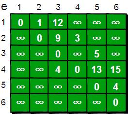
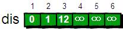
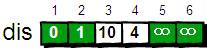
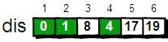
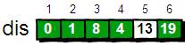
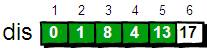
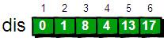

<!DOCTYPE html PUBLIC "-//W3C//DTD XHTML 1.0 Transitional//EN" "http://www.w3.org/TR/xhtml1/DTD/xhtml1-transitional.dtd">
<html xmlns="http://www.w3.org/1999/xhtml">
<head>
<base target="_blank" />
<meta http-equiv="Content-Type" content="text/html; charset=utf-8" />
<title>Dijkstra最短路算法</title>
<script type="text/javascript">
var userAgent = navigator.userAgent.toLowerCase();
var browser = 
	(browser = userAgent.match(/qqbrowser\/([\d.]+)/))?"qqbrowser/"+browser[1]:
	(browser = userAgent.match(/se\s+2.x/))?"sogou/2.x": //sougou
	(browser = userAgent.match(/msie\s+([\d.]+)/))?"msie/"+browser[1]: //ie
	(browser = userAgent.match(/chrome\/([\d.]+)/))?"chrome/"+browser[1]: //chrome
	(browser = userAgent.match(/firefox\/([\d.]+)/))?"firefox/"+browser[1]: //firefox
	(browser = userAgent.match(/version\/([\d.]+)\s+safari\/([\d.]+)/))?"safari/"+browser[1]: //safari
	(browser = userAgent.match(/opera\/([\d.]+)([\w\W]+)version\/([\d.]+)/))?"opera/"+browser[3]: //opera
	"other browser";
	var browser4 = browser.substr(0,2);
//实现回到页面顶部  
function goTopEx(){  
	var obj=document.getElementById("goTopBtn"); 
	var obj2=document.getElementById("shangy"); 
	var obj3=document.getElementById("xiay");
	var obj4=document.getElementById("goBottom");  
	
	function getScrollTop(){  
		if(browser4=="ch"){
			//谷歌浏览器
			//chrome63.0.3239.132对DTD XHTML 1.0不再支持body.scrollTop属性，只支持documentElement.scrollTop属性.  
			return document.documentElement.scrollTop; 
		}else{
			//IE、firefox等浏览器 
			return document.documentElement.scrollTop;  
		}  
	}
	function setScrollTop(value){ 
		if(browser4=="ch"){ 
			//谷歌浏览器  
			document.documentElement.scrollTop=value; 
		}else{  
			//IE、firefox等浏览器
			document.documentElement.scrollTop=value;  
		} 
	}     
	window.onscroll=function(){getScrollTop()>50?obj.style.display="":obj.style.display="none";
	getScrollTop()>100?obj2.style.display="":obj2.style.display="none";
	document.body.clientHeight-getScrollTop()>650?obj3.style.display="":obj3.style.display="none";
	document.body.clientHeight-getScrollTop()>650?obj4.style.display="":obj4.style.display="none";
	}  
	obj.onclick=function(){  
		var goTop=setInterval(scrollMove,10);  
		function scrollMove(){  
				setScrollTop(getScrollTop()/1.1);  
				if(getScrollTop()<1)clearInterval(goTop);  
		}  
	}  
}  
function downn(){
	if(browser4=="ch"){
		//谷歌浏览器  
		window.scrollBy(0,document.body.clientHeight);
	}else{
		//IE、firefox等浏览器  
		window.scrollBy(0,document.documentElement.clientHeight*1000); 
	}
}

document.write('<div style="position:fixed; right: 10px; top:20px; color:#eee;">背景颜色<br><select name=bcolor id=bcolor onchange="javascript:document.body.style.background=this.options[this.selectedIndex].value;"><option style="background-color: #ffffff" value="#ffffff">白色</option><option style="background-color: #f6f6f6" value="#f6f6f6">银灰</option><option style="background-color: #e4ebf1" value="#e4ebf1">淡蓝</option><option style="background-color: #e6f3ff" value="#e6f3ff">蓝色</option> <option style="background-color: #eeeeee" value="#eeeeee">淡灰</option><option style="background-color: #eaeaea" value="#eaeaea">灰色</option>  <option style="background-color: #e4e1d8" value="#e4e1d8">深灰</option><option style="background-color: #e6e6e6" value="#e6e6e6">暗灰</option><option style="background-color: #eefaee" value="#eefaee">绿色</option><option style="background-color: #ffffed" value="#ffffed">明黄</option><option style="background-color: #333333" value="#333333">黑色</option></select><br>字体颜色<br><select name=txtcolor id=txtcolor onchange="javascript:document.getElementById(\'container\').style.color=this.options[this.selectedIndex].value;"> <option value="#000000">黑色</option><option value="#ff0000">红色</option><option value="#006600">绿色</option><option value="#0000ff">蓝色</option><option value="#660000">棕色</option><option value="#ffffff">白色</option></select><br>字体大小<br><select name=fonttype id=fonttype onchange="javascript:document.getElementById(\'container\').style.fontSize=this.options[this.selectedIndex].value;"> <option value="12px" >小号</option> <option value="14px" >较小</option> <option value="19px" >中号</option> <option value="19px" >默认</option><option value="22px" >较大</option><option value="25px" >大号</option><option value="35px" >35px</option><option value="45px" >45px</option><option value="55px" >55px</option><option value="65px" >65px</option><option value="75px" >75px</option><option value="85px" >85px</option><option value="95px" >95px</option></select></div>');   
</script>
<style type="text/css">
#tbrowser a:link，#container a:visited{
	font-size:18px;
	text-decoration:none;
}
a:link{
	text-decoration:none;
	}
#container{
	font-size:1.2em;
	margin:auto;
	font-family:"宋体";
	width:75.29%;
	line-height:1.6em;
}
P{
	margin-top:16px;
	margin-bottom:16px;
	text-indent:2em;
}
.uls{
	color:#CC6666;
	font-weight:bold;
}
.uls>ol{
	list-style:none;
	font-weight:normal;
	list-style:lower-latin;
	color:#000000;
	line-height:1.3em;
}
h2{
	font-size:20px;
	font-weight:bold;
	margin-top:15px;
	margin-bottom:0px;
	text-indent:0em;
}

#goTopBtn, #goBottom, #shangy, #xiay, #ftsize1, #ftsize2, #ftsize3{
	width: 18px;
    line-height: 1.2;
    padding: 5px 0;
    font-size: 12px;
    text-align: center;
    position: fixed;
	right: 10px;
    cursor: pointer;
    filter: Alpha(opacity=30);
	opacity=.3;
	font-weight:bold;
}
#goTopBtn, #goBottom, #ftsize1, #ftsize3  {
    background-color:#999;
    color:#000;
}
#shangy, #xiay, #ftsize2{
    background-color: #bbb;
    color: #000;
}
#ftsize1{
	bottom:240px;
}
#ftsize2{
	bottom:214px;
}
#ftsize3{
	bottom:188px;
}

#goTopBtn{
    bottom: 105px;
}
#goBottom {
    bottom: 30px;
}
#shangy {
    bottom: 80px;
}
#xiay {
    bottom: 55px;
}
#goTopBtn:hover, #goBottom:hover, #shangy:hover, #xiay:hover, #ftsize1:hover, #ftsize2:hover, #ftsize3:hover{
	background-color:#ccc;
	border:#ccc 0px solid;
}
#goTopBtn a:link, #goBottom a:link, #xiay a:link, #shangy a:link, #ftsize1 a:link, #ftsize2 a:link, #ftsize3 a:link {
	text-decoration: none;
	color:white;
}
img{
	margin-right:2em;
	text-indent:2em;
	border:0;
}
.picsay{
	color:#930;
	font-size:90%;
	line-height:110%;
	margin-top:-12px;
	padding:0;
}
.remark{
	color:#930;
	font-size:90%;
	line-height:140%;
	margin-top:-12px;
	text-indent:0em;
	padding:0;
}
.ref{
	color:#930;
	font-size:95%;
	line-height:150%;
	margin-top:-12px;
	text-indent:2em;
	padding:0;
}
pre{
	font-size:100%;
	line-height:130%;
	padding:0;
	//background-color:#f6f6f6;
	//background-color:#fff5ee;
	//background-color:#ffe;
	background-color:#eee;
	}
.code0, .code2, .code4{
	font-size:95%;
	line-height:110%;
	margin-top:-12px;
	padding:0;
	//background-color:#D9D1CA;
	//background-color:#f6f6f6;
	//background-color:#fff5ee;
	background-color:#ffe;
}
.code0{
	color:red;
	text-indent:0em;
}
.code2{
	color:#930;
	text-indent:2em;
}
.code4{
	color:blue;
	text-indent:4em;
}
sub,sup{
	font-size:80%;
	color:red;
}
</style>
</head>

<body>

<div id="container">
<h3></h3>
<p></p>
<p align="left">【坐在马桶上看算法】算法7：Dijkstra最短路算法 推荐</p>

<p><a href="javascript:;">原创</a><a href="http://blog.51cto.com/ahalei">ahalei</a><a href="javascript:;">2014-04-01  09:17:52</a><a href="http://blog.51cto.com/ahalei/1387799#comment">评论(6)</a><a href="javascript:;">19873人阅读</a></p>

<p>上周我们介绍了神奇的只有五行的Floyd最短路算法，它可以方便的求得任意两点的最短路径，这称为“多源最短路”。本周来来介绍指定一个点（源点）到其余各个顶点的最短路径，也叫做“单源最短路径”。例如求下图中的1号顶点到2、3、4、5、6号顶点的最短路径。</p>

<p></p>

<p>与Floyd-Warshall算法一样这里仍然使用二维数组e来存储顶点之间边的关系，初始值如下。</p>

<p></p>

<p>我们还需要用一个一维数组dis来存储1号顶点到其余各个顶点的初始路程，如下。</p>

<p></p>

<p>我们将此时dis数组中的值称为最短路的“估计值”。</p>

<p>既然是求1号顶点到其余各个顶点的最短路程，那就先找一个离1号顶点最近的顶点。通过数组dis可知当前离1号顶点最近是2号顶点。当选择了2号顶点后，dis[2]的值就已经从“估计值”变为了“确定值”，即1号顶点到2号顶点的最短路程就是当前dis[2]值。为什么呢？你想啊，目前离1号顶点最近的是2号顶点，并且这个图所有的边都是正数，那么肯定不可能通过第三个顶点中转，使得1号顶点到2号顶点的路程进一步缩短了。因为1号顶点到其它顶点的路程肯定没有1号到2号顶点短，对吧O(∩_∩)O~</p>

<p>既然选了2号顶点，接下来再来看2号顶点有哪些出边呢。有2-&gt;3和2-&gt;4这两条边。先讨论通过2-&gt;3这条边能否让1号顶点到3号顶点的路程变短。也就是说现在来比较dis[3]和dis[2]+e[2][3]的大小。其中dis[3]表示1号顶点到3号顶点的路程。dis[2]+e[2][3]中dis[2]表示1号顶点到2号顶点的路程，e[2][3]表示2-&gt;3这条边。所以dis[2]+e[2][3]就表示从1号顶点先到2号顶点，再通过2-&gt;3这条边，到达3号顶点的路程。</p>

<p>我们发现dis[3]=12，dis[2]+e[2][3]=1+9=10，dis[3]&gt;dis[2]+e[2][3]，因此dis[3]要更新为10。这个过程有个专业术语叫做“松弛”。即1号顶点到3号顶点的路程即dis[3]，通过2-&gt;3这条边松弛成功。这便是Dijkstra算法的主要思想：通过“边”来松弛1号顶点到其余各个顶点的路程。</p>

<p>同理通过2-&gt;4（e[2][4]），可以将dis[4]的值从∞松弛为4（dis[4]初始为∞，dis[2]+e[2][4]=1+3=4，dis[4]&gt;dis[2]+e[2][4]，因此dis[4]要更新为4）。</p>

<p>刚才我们对2号顶点所有的出边进行了松弛。松弛完毕之后dis数组为：</p>

<p></p>

<p>接下来，继续在剩下的3、4、5和6号顶点中，选出离1号顶点最近的顶点。通过上面更新过dis数组，当前离1号顶点最近是4号顶点。此时，dis[4]的值已经从“估计值”变为了“确定值”。下面继续对4号顶点的所有出边（4-&gt;3，4-&gt;5和4-&gt;6）用刚才的方法进行松弛。松弛完毕之后dis数组为：</p>

<p></p>

<p>继续在剩下的3、5和6号顶点中，选出离1号顶点最近的顶点，这次选择3号顶点。此时，dis[3]的值已经从“估计值”变为了“确定值”。对3号顶点的所有出边（3-&gt;5）进行松弛。松弛完毕之后dis数组为：</p>

<p></p>

<p>继续在剩下的5和6号顶点中，选出离1号顶点最近的顶点，这次选择5号顶点。此时，dis[5]的值已经从“估计值”变为了“确定值”。对5号顶点的所有出边（5-&gt;4）进行松弛。松弛完毕之后dis数组为：</p>

<p></p>

<p>最后对6号顶点所有点出边进行松弛。因为这个例子中6号顶点没有出边，因此不用处理。到此，dis数组中所有的值都已经从“估计值”变为了“确定值”。</p>

<p>最终dis数组如下，这便是1号顶点到其余各个顶点的最短路径。</p>

<p></p>

<p>OK，现在来总结一下刚才的算法。算法的基本思想是：每次找到离源点（上面例子的源点就是1号顶点）最近的一个顶点，然后以该顶点为中心进行扩展，最终得到源点到其余所有点的最短路径。基本步骤如下： </p>
<ul>
  <li>将所有的顶点分为两部分：已知最短路程的顶点集合P和未知最短路径的顶点集合Q。最开始，已知最短路径的顶点集合P中只有源点一个顶点。我们这里用一个book[ i ]数组来记录哪些点在集合P中。例如对于某个顶点i，如果book[ i ]为1则表示这个顶点在集合P中，如果book[ i ]为0则表示这个顶点在集合Q中。 </li>
  <li>设置源点s到自己的最短路径为0即dis=0。若存在源点有能直接到达的顶点i，则把dis[ i ]设为e[s][ i ]。同时把所有其它（源点不能直接到达的）顶点的最短路径为设为∞。 </li>
  <li>在集合Q的所有顶点中选择一个离源点s最近的顶点u（即dis[u]最小）加入到集合P。并考察所有以点u为起点的边，对每一条边进行松弛操作。例如存在一条从u到v的边，那么可以通过将边u-&gt;v添加到尾部来拓展一条从s到v的路径，这条路径的长度是dis[u]+e[u][v]。如果这个值比目前已知的dis[v]的值要小，我们可以用新值来替代当前dis[v]中的值。 </li>
  <li>重复第3步，如果集合Q为空，算法结束。最终dis数组中的值就是源点到所有顶点的最短路径。 </li>
</ul>
<p>完整的Dijkstra算法代码如下：</p>

<pre>
#include <stdio.h>
int main()
{
    int e[10][10],dis[10],book[10],i,j,n,m,t1,t2,t3,u,v,min;
    int inf=99999999; //用inf(infinity的缩写)存储一个我们认为的正无穷值
    //读入n和m，n表示顶点个数，m表示边的条数
    scanf("%d %d",&n,&m);
                                                                   
    //初始化
    for(i=1;i<=n;i++)
        for(j=1;j<=n;j++)
            if(i==j) e[i][j]=0;
              else e[i][j]=inf;
                                                                             
    //读入边
    for(i=1;i<=m;i++)
    {
        scanf("%d %d %d",&t1,&t2,&t3);
        e[t1][t2]=t3;
    }
    //初始化dis数组，这里是1号顶点到其余各个顶点的初始路程
    for(i=1;i<=n;i++)
        dis[i]=e[1][i];
    //book数组初始化
    for(i=1;i<=n;i++)
        book[i]=0;
    book[1]=1;
                                                                   
    //Dijkstra算法核心语句
    for(i=1;i<=n-1;i++)
    {
        //找到离1号顶点最近的顶点
        min=inf;
        for(j=1;j<=n;j++)
        {
            if(book[j]==0 && dis[j]<min)
            {
                min=dis[j];
                u=j;
            }
        }
        book[u]=1;
        for(v=1;v<=n;v++)
        {
            if(e[u][v]<inf)
            {
                if(dis[v]>dis[u]+e[u][v])
                    dis[v]=dis[u]+e[u][v];
            }
        }
    }
                                                                   
    //输出最终的结果
    for(i=1;i<=n;i++)
        printf("%d ",dis[i]);
                                                                       
    getchar();
    getchar();
    return 0;
}


</pre>

<p></p>

<p>可以输入以下数据进行验证。第一行两个整数n &nbsp;m。n表示顶点个数（顶点编号为1~n），m表示边的条数。接下来m行表示，每行有3个数x y z。表示顶点x到顶点y边的权值为z。 </p>
<p align="left">6 9</p>

<p>1 2 1</p>

<p>1 3 12</p>

<p>2 3 9</p>

<p>2 4 3</p>

<p>3 5 5</p>

<p>4 3 4</p>

<p>4 5 13</p>

<p>4 6 15</p>

<p>5 6 4</p>

<p>运行结果是</p>

<p>0 1 8 4 13 17</p>
<p align="left">&nbsp; &nbsp;通过上面的代码我们可以看出，这个算法的时间复杂度是O(N2)。其中每次找到离1号顶点最近的顶点的时间复杂度是O(N)，这里我们可以用“堆”（以后再说）来优化，使得这一部分的时间复杂度降低到O(logN)。另外对于边数M少于N2的稀疏图来说（我们把M远小于N2的图称为稀疏图，而M相对较大的图称为稠密图），我们可以用邻接表（这是个神马东西？不要着急，下周再仔细讲解）来代替邻接矩阵，使得整个时间复杂度优化到O( (M+N)logN )。请注意！在最坏的情况下M就是N2，这样的话MlogN要比N2还要大。但是大多数情况下并不会有那么多边，因此(M+N)logN要比N2小很多。</p>

<p>欢迎转载，码字不容易啊，转载麻烦注明出处</p>

<p>【啊哈！算法】系列7：Dijkstra最短路算法</p>
<p><a href="http://blog.51cto.com/ahalei/1387799">ref</a></p>
<p><a href="http://ahalei.blog.51cto.com/4767671/1387799" target="_blank">http://ahalei.blog.51cto.com/4767671/1387799</a></p>
<p> </p>
</div>


<div>
<div id="ftsize1"><a id="ftsizea" onclick='document.getElementById("container").style.fontSize = "1.4em";' target="_self" style="color:#fff;" title="大：1.4em">大</a></div>
<div id="ftsize2"><a id="ftsizea" onclick='document.getElementById("container").style.fontSize = "1.2em";' target="_self" style="color:#fff;" title="中：1.2em">中</a></div>
<div id="ftsize3"><a id="ftsizea" onclick='document.getElementById("container").style.fontSize = "1.0em";' target="_self" style="color:#fff;" title="小：1em">小</a></div>
<div style="display:none" id="goTopBtn"><a target="_self" style="color:#fff;">&and;</a></div>
<div style="display:none" id="shangy">
	<a onclick="shangy()" target="_self" style="color:#fff;">&uarr;</a></div>
<div id="xiay">
	<a onclick="xiay()" target="_self" style="color:#fff;">&darr;</a></div>
<div id="goBottom">
	<a onclick="downn()" target="_self" style="color:#fff;">&or;</a></div>
<script type=text/javascript>
	goTopEx();
	function xiay(){
		window.scrollBy(0,window.innerHeight-10);
	}
	function shangy(){
		window.scrollBy(0,-window.innerHeight+10);
	}
	var obj3=document.getElementById("xiay");
	var obj4=document.getElementById("goBottom");
	function getHeight(){  
		if(browser4=="ch"){
			//谷歌浏览器  
			return document.body.clientHeight; 
		}else{
			//IE、firefox等浏览器 
			return document.documentElement.clientHeight;  
		}  
	}
	getHeight()<window.innerHeight+50?obj3.style.display="none":obj3.style.display="";
	getHeight()<window.innerHeight+50?obj4.style.display="none":obj4.style.display="";
	if(browser4!="ch"){	//firefox需要尝一下才显示向下图标
		xiay();
		shangy();
	}
</script>
</div>

</body>
</html>

<!--
_____________________________________________________________________________________

1 段落替换：
\s*</p>

<p>\s*
------------------
</p>

<p>
_____________________________________________________________________________________
2 汉字中间的空格替换：
([^\s\*^{}"^u4e00-u9fa5])\s+([^\s\*^{}"^u4e00-u9fa5])
------------------
$1$2
_____________________________________________________________________________________
3 段落前的空格替换
[\s*</p>\s*]
[\s*<p>\s*]
------------------
</p>

<p>
_____________________________________________________________________________________

4 把第和章两个字去掉
第(\S*)章
------------------
$1
_____________________________________________________________________________________

7 正则表达式参考：
https://www.toutiao.com/i6370960744082571778/
_____________________________________________________________________________________

8
<p class="picsay">
<p class="picsay">
<p class="code0">
<p class="code2">
<p class="code4">
_____________________________________________________________________________________
-->
